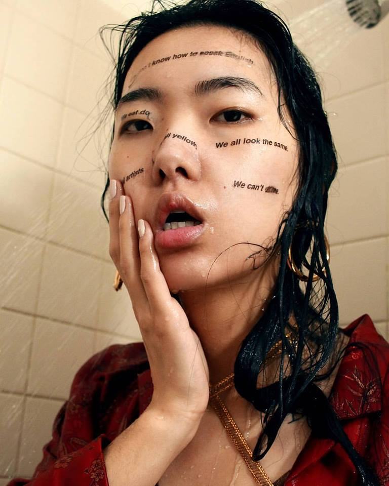
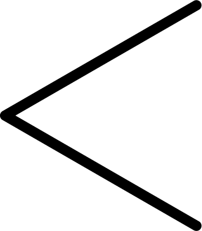
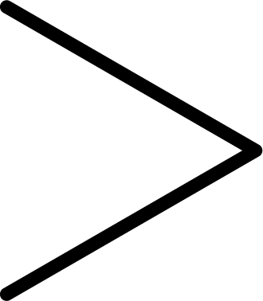
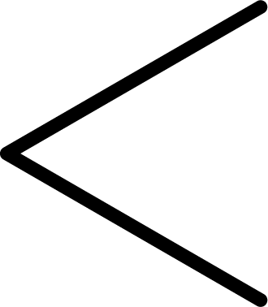
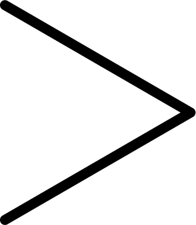

Peter Devito
La storia in un volto
“Attraverso il mio lavoro, aspiro a trasmettere la mia prospettiva sul mondo. Il mio obiettivo è evocare la pensosità e la contemplazione di chi guarda i miei lavori. Non voglio che le persone vedano le mie opere solo per quello che è in superficie. Voglio che riflettano su ciò che stanno guardando e sul loro significato. Produrre ritratti è la mia dipendenza. Sono sempre stato affascinato dal volto umano, dalla sua struttura,dalla sua forma. Fin dalla giovane età, il mio obiettivo era disegnare i volti delle persone e ora che sono capace di catturare la profondità degli esseri umani, non credo che mi fermerò mai. Adoro disegnare persone. Un senso di realizzazione mi riempie ogni volta che finisco un ritratto. Non importa chi sto disegnando, mi sembra di guardare una parte di me stesso quando ho finito il mio lavoro. Essere in grado di catturare la personalità di una persona attraverso l'illustrazione ha un fascino che non mi stancherà mai. Le mie opere raccontano la storia che non posso cantare, la storia che non posso descrivere con le parole.Peter James DeVito, nato il 19 maggio 1997, è un artista e fotografo americano. Attualmente frequenta il Fashion Institute of Technology e studia illustrazione. DeVito è nato e cresciuto a New York. Eccelle in sketch a penna a sfera, rendering a carboncino e fotografia di ritratti, sia in posa che in candidatura.
Per saperne di più
visitate la pagina --> prsonale di Peter Devito
Biografia
Nata a Los Angeles, lavora a New York, Sanford Biggers crea opere che integrano film, video, installazione, scultura, disegno, musica originale e performance. Ha intenzionalmente complicato questioni come l'hip hop, il buddismo, la politica, l'identità e la storia dell'arte per offrire nuove prospettive e associazioni per i simboli stabiliti. Il significato del lavoro di Bigger all'interno della società contemporanea è stato celebrato attraverso mostre personali sia a livello nazionale che internazionale, più recentemente al Brooklyn Museum, Sculpture Center e Mass MoCA. Ha partecipato a residenze di prestigio e borse di studio tra le tante: Akademie Schloss Solitude, Stoccarda, Germania e Castello Ujazdowski, Varsavia. È stato membro del Creative Time Global Residency, del Socrates Sculpture Park Residency, del Lower Manhattan del Cultural Council World Views AIR Program, della Eyebeam Atelier Teaching Residency, dello Studio Museum AIR Program, della P.S. 1 programma di studio internazionale e la scuola di pittura e scultura Skowhegan. Le installazioni, i video e gli spettacoli di Biggers sono apparsi in vari luoghi in tutto il mondo, tra cui Tate Britain e Tate Modern a Londra, il Whitney Museum e lo Studio Museum di Harlem, New York e Yerba Bue un Center for the Arts di San Francisco, oltre che in Cina, Germania, Ungheria, Giappone, Polonia e Russia. Biggers ha vinto premi tra cui: l'American Academy in Berlin Prize, Greenfield Prize, New York City Art Teachers Association Artist of the Year, Creative Time Travel Grant. Biggers è Assistant Professor al programma di arti visive della Columbia University e membro del consiglio di amministrazione di Sculpture Center, Soho House e CUE Foundation. Ha anche insegnato al programma di Scultura e ampliamenti della Virginia Commonwealth University ed è stato visiting scholar presso il dipartimento VES dell'Università di Harvard nel 2009.

 


